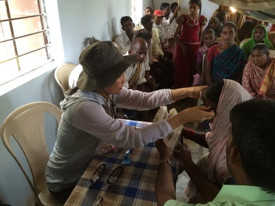
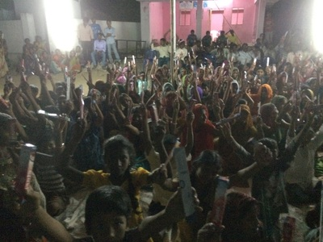
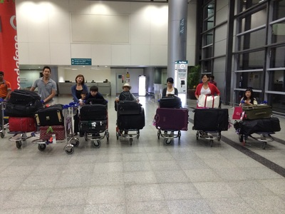

April 30, 2014
India - April 18-24, 2014: Vacation Bible School

Praise & Worship

350 children seated so nicely

Our VBS team
While medical, dental, & vision teams spent the day in the villages for their clinics, we had a small group that went to the boarding school for VBS on Wed, Thur, Fri. Truly, the highlight of this trip.
Three hundred fifty children singing their heart out, with God in their hearts truly brings tears to your eyes. These children have nothing, most of them only one parent, come from severe poverty with barely a suitcase to their name yet the joy in their hearts shines brightly as if they have everything in the world. We have so much to be thankful for back in the states.
Doing crafts with 350 kids in one room was definitely one crazy experience. It was like being in a market with everyone screaming all at once... mass pandemonium.
April 23, 2014
India Day 3 & 4
Haven't had time to update as everyone's been working so hard. We now have a dental group at our school servicing the 500 children, medical/dental team going out to the villages, and a vision (glasses) team going on their own (Micah age 12 and Sydney age 11 have been able to run the whole vision on their own fitting glasses for the villagers!) and finally two teams going out to the numerous baptisms (we had 20 on Tuesday and another 20 yesterday).
On top of all that, imagine doing a VBS program for 350 children with 4 days notice! However, seeing all 350 children singing their hearts out brought tears to our eyes and made it all worth while.
Even as our meeting attendance has grown each night our meetings haven't been without its challenges and we ask for additional prayer as we were told yesterday that a group of thugs threatened to kill the pastor and beat up the team if we didn't stop doing the meetings (there's an election going on and one of the candidates is anti-Christian). We consulted the village elders and the villagers were adamant that we continue and said they would rally and "defend" us if that happened. I went last night to our meeting that received the threat and nothing happened but it was touching to know how much the villagers were willing to stand up for us to continue the meetings.
April 21, 2014
Day 2: Medical, Vision & Dental Services
We had our first dental/vision/medical services and evening meetings. The teams worked tirelessly throughout the day providing care to hundreds of villagers who lined up for treatment. The evening evangelism meeting saw strong attendance with many requesting prayer at the close.